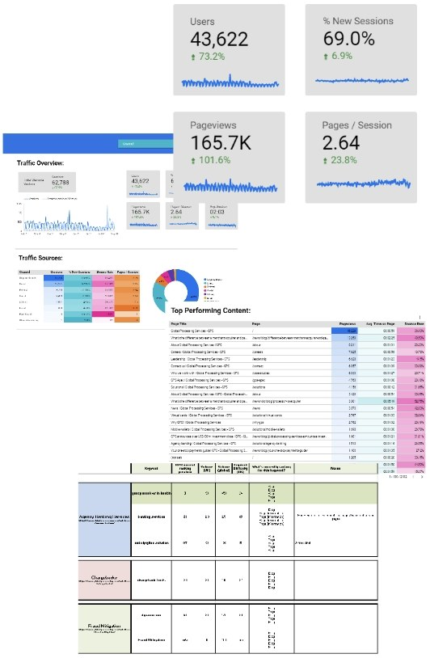

Global Processing Services (now Thredd) · Payments
International SEO Strategy
A 6–12 month regional search strategy across APAC, LATAM and the US that grew organic visibility for core services and positioned the business in high-value industry conversations.
- +60%Organic traffic from one content initiative in 6 months
- +101.6%Pageviews vs previous period
- +73.2%Users vs previous period
- ~£3.5mof a £7m pipeline associated with search
The challenge
Each region had different search intent, competitors and content gaps. The business needed one coordinated approach covering keywords, content, technical discoverability and measurement — not separate local efforts.
Objective
Grow qualified organic visibility across APAC, LATAM and the US and establish the business in strategically valuable, future-facing industry search conversations.
Approach
Research
Segmented keywords by region and service, and mapped search intent and competitor gaps.
Structure
Designed a silo-format SEO structure and content plan aligned to core services.
Optimise
Delivered technical optimisation and content recommendations, managing agency partners.
Measure
Built the KPI structure and a Google Data Studio dashboard to track performance.
Outcomes
One content initiative grew organic traffic by 60% in six months, and SEO activity drove 25,000+ unique organic visits year-to-date. Reporting showed users up 73.2%, pageviews up 101.6% and pages per session up 23.8% against the previous period. Search activity was associated with approximately £3.5m of a £7m pipeline.
